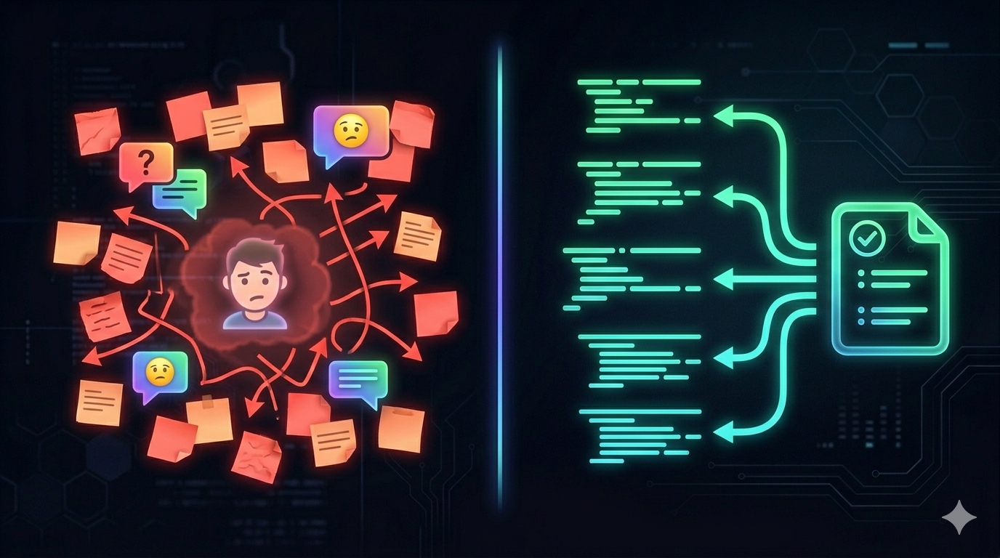

Spec-Driven Development is a methodology where the spec is the requirement, the test contract, and the documentation — all in one file. Before any line of code is written.
SDD sits alongside TDD, BDD, and DDD as a development paradigm. Each answers a different question.
SDD encompasses TDD: the spec contains test scenarios. A team using SDD is inherently doing TDD — but with a richer, more accessible source of truth that everyone on the team can read and write.

No code exists without a spec. The spec defines inputs, outputs, errors, side-effects, and test scenarios — before any implementation.
AI synthesizes code, but humans define constraints (skills/rules) and approve the output. Every piece of code passes through human review.
Code is done when it passes all test scenarios in the spec — not when the developer says so. The spec is the contract.
SDD works with Cursor, Copilot, CI/CD pipelines, custom engines, or a developer writing code by hand. The spec is the universal input.
Specs are versioned. When business rules change, the spec is updated. The code evolves to match. The spec governs the code, not the other way around.
A Markdown file that anyone on the team can write. It defines what the software should do, how to test it, and serves as living documentation.
# POST /user
## Auth
None
## Description
Creates a new user. Validates email format,
hashes password with bcrypt, returns JWT.
## Input
- email (string, required, email format)
- passkey (string, required, min 8 chars)
## Output (201)
- token (string, JWT)
- userData
- id (uuid)
- email (string)
- created_at (datetime)
## Errors
- 409: Email exists → USER_ALREADY_EXISTS
- 422: Invalid email → INVALID_EMAIL
- 422: Weak password → WEAK_PASSKEY
## Test Scenarios
### Happy Path
Input: { "email": "jon@doe.com", "passkey": "securePass123" }
Expect: status 201, body contains token
DB: users table has record with email jon@doe.com
### Duplicate Email
Seed: insert user with email existing@email.com
Input: { "email": "existing@email.com", "passkey": "secure123" }
Expect: status 409What the endpoint does, what it receives, what it returns. No ambiguity.
Scenarios with input, expected output, and database assertions. Executable contracts.
Always up to date. If the spec changes, the code must change. It can never be outdated.
Specs define what to build. Skills define how to build it. Architectural constraints that every piece of code must follow.
"Every endpoint must follow DDD: Handler → Service → Repository"
"Never use raw SQL. Always use parameterized queries. Bcrypt cost 12 minimum."
"Always validate and sanitize all user input. Never trust the client."
"All dependencies injected via constructor. Never instantiate directly."
"Generate unit tests for every service. Edge cases must be covered."
"Use language conventions. Interfaces don't have I prefix. Constructors are New*."
Write once, use everywhere. Skills are Markdown files — not tied to any tool.
PM, frontend dev, or backend dev writes a Markdown file defining the feature: inputs, outputs, errors, side-effects, and test scenarios.
The spec is reviewed in a Pull Request, just like code. The team verifies business rules, edge cases, and API contracts.
Code is generated following the spec and skills. By Cursor, by a CI/CD pipeline calling an LLM, or by a developer writing by hand.
The code is executed against the spec's test scenarios. If the output matches the expected contract, the code is valid.
A developer reviews the code for logic, security, and architecture. Feedback feeds back into the synthesis for correction.
Approved code is merged and deployed. The spec remains as living documentation. When the spec changes, the cycle restarts.
SDD democratizes feature definition. Everyone contributes at their level of expertise.
Defines the "What"
Writes business rules in natural language. "When the user registers, return a token. If the email exists, return an error."
Defines the "Interface"
Defines input/output schemas. What the API receives and returns. Error codes the UI needs to handle.
Defines the "How"
Writes skills/rules, defines security constraints, reviews generated code. Evolves from code writer to architecture curator.
| Aspect | Traditional | SDD |
|---|---|---|
| Requirements | Jira tickets, meetings, Slack | Spec file in the repo |
| Tests | Written after code (or never) | Defined before code (in the spec) |
| Documentation | Separate doc (usually outdated) | The spec IS the documentation |
| Consistency | Depends on the developer | Enforced by skills |
| Traceability | Check Slack / memory | Git blame on spec file |
| Onboarding | "Read the code" | "Read the specs" |
Create the SDD structure in your project
Define inputs, outputs, errors, and test scenarios
Codify your architecture decisions and security rules
With AI tools or by hand — the spec is the universal input
Run test scenarios. If they pass, you're done.